Each lesson from latest.json, finished and rendered by Kite's overlay in the default 1400 × 900 panel on a 1920 × 1080 display. Five deterministic teaching fixtures plus three targeted fresh probes on each of three providers. This is not the full golden set or a scored clarity comparison. Click a board to open it at full size.
Teaching fixtures and targeted provider probes: 2026-10-08T07:38:01.951Z. Finished-board images do not measure live voice timing or teaching clarity. See synthetic renderer checks and real Cartesia cue/gap measurements and conditions. A scored human clarity comparison remains pending.
| Model | Drew | Valid first try | Repairs | First token | First beat (streamed) | First stroke | Output tokens | Lint-clean | Overlaps | Through shapes | Crossings | Text (median) | Text under 14 px |
|---|---|---|---|---|---|---|---|---|---|---|---|---|---|
| Teaching fixtureslocal:teaching-fixtures | 5/5 | — | undefined | — | — | — | — | 100% | — | — | — | — px | — |
| deepseek:deepseek-flashdeepseek:deepseek-flash | 3/3 | — | undefined | — | — | — | — | 100% | — | — | — | — px | — |
| groq:openai/gpt-oss-120bgroq:openai/gpt-oss-120b | 3/3 | — | undefined | — | — | — | — | 100% | — | — | — | — px | — |
| moonshot:kimi-k2.6moonshot:kimi-k2.6 | 3/3 | — | undefined | — | — | — | — | 100% | — | — | — | — px | — |
Times and tokens are medians over lessons; overlaps, through and crossings are means per lesson.
| Prompt | Teaching fixtures | deepseek:deepseek-flash | groq:openai/gpt-oss-120b | moonshot:kimi-k2.6 |
|---|---|---|---|---|
| · data | 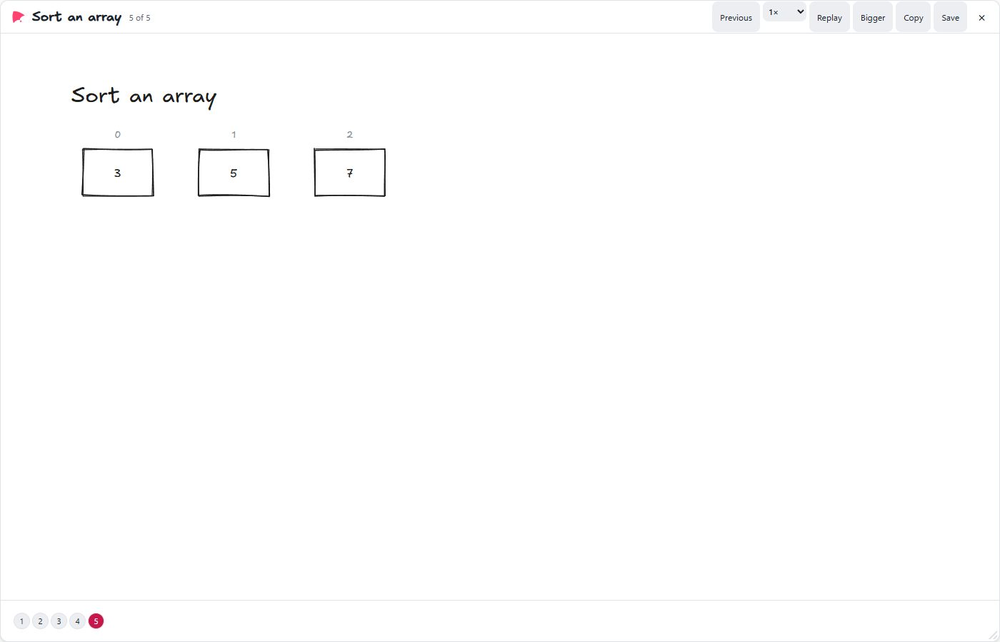 — · — tokens · 5 beats · 7 elements · text 14 px Lint-clean | — | — | — |
| · data | 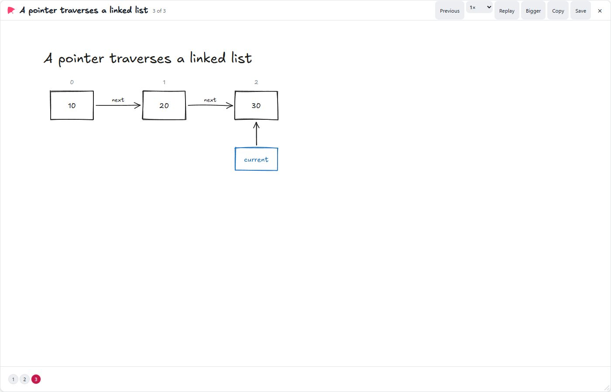 — · — tokens · 3 beats · 11 elements · text 14 px Lint-clean | — | — | — |
| · data | 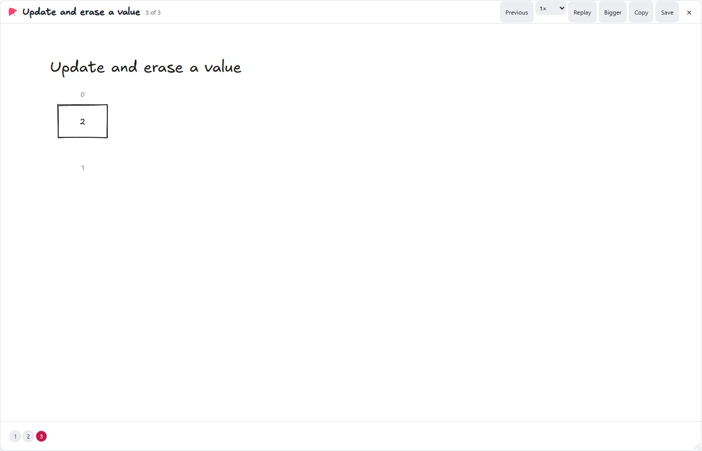 — · — tokens · 3 beats · 4 elements · text 14 px Lint-clean | — | — | — |
| · steps | 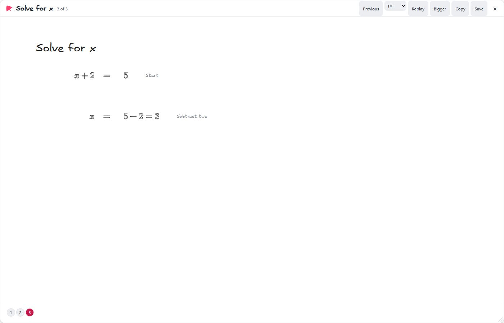 — · — tokens · 3 beats · 9 elements · text 14 px Lint-clean | — | — | — |
| · plot | 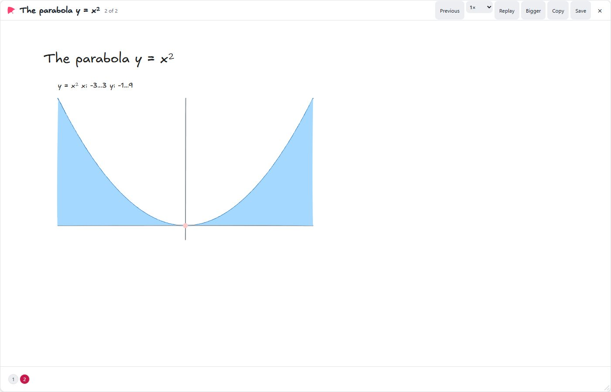 — · — tokens · 2 beats · 7 elements · text 16.2 px Lint-clean | — | — | — |
| · dataTeach me how to sort [7, 3, 5] using swaps. Show the array changing and ask me one question before giving its answer. | — | 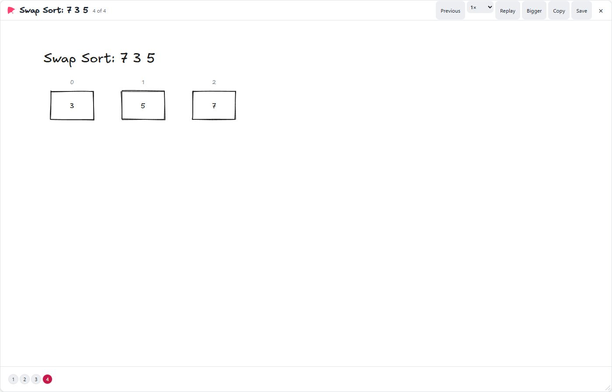 — · 250 tokens · 4 beats · 7 elements · text 14 px Lint-clean | 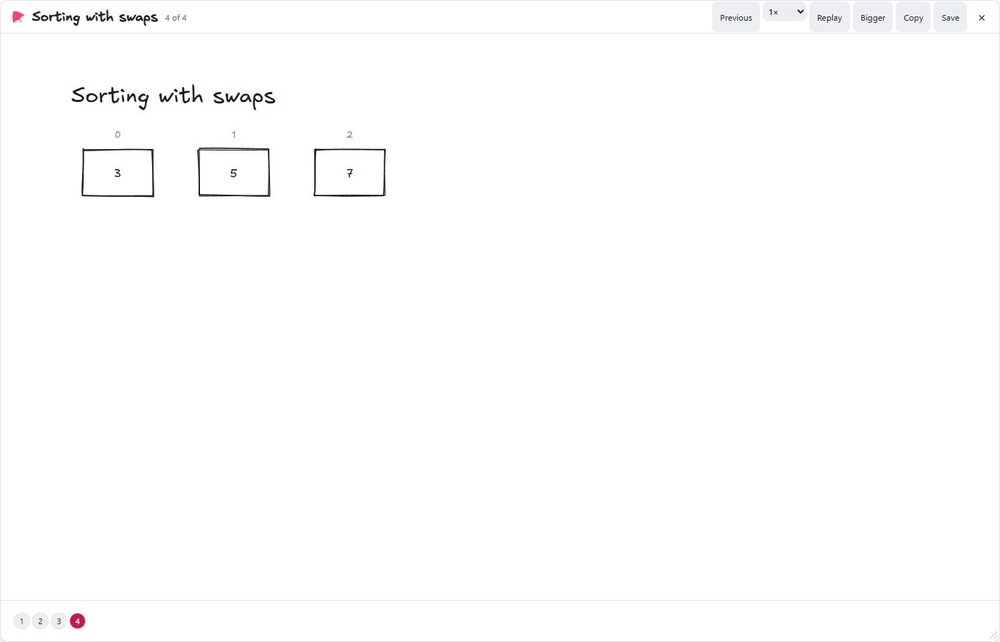 — · 431 tokens · 4 beats · 7 elements · text 14 px Lint-clean | 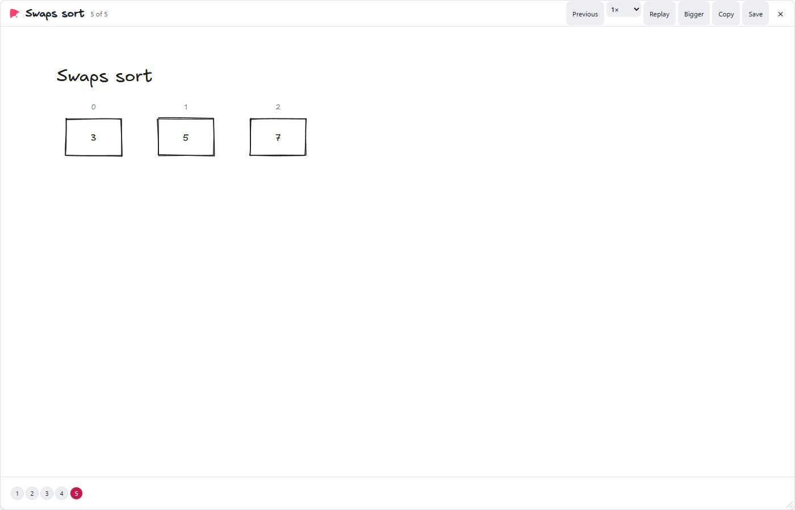 — · 327 tokens · 5 beats · 7 elements · text 14 px Lint-clean |
| · stepsShow the worked maths for solving x + 2 = 5, with aligned equations. | — | 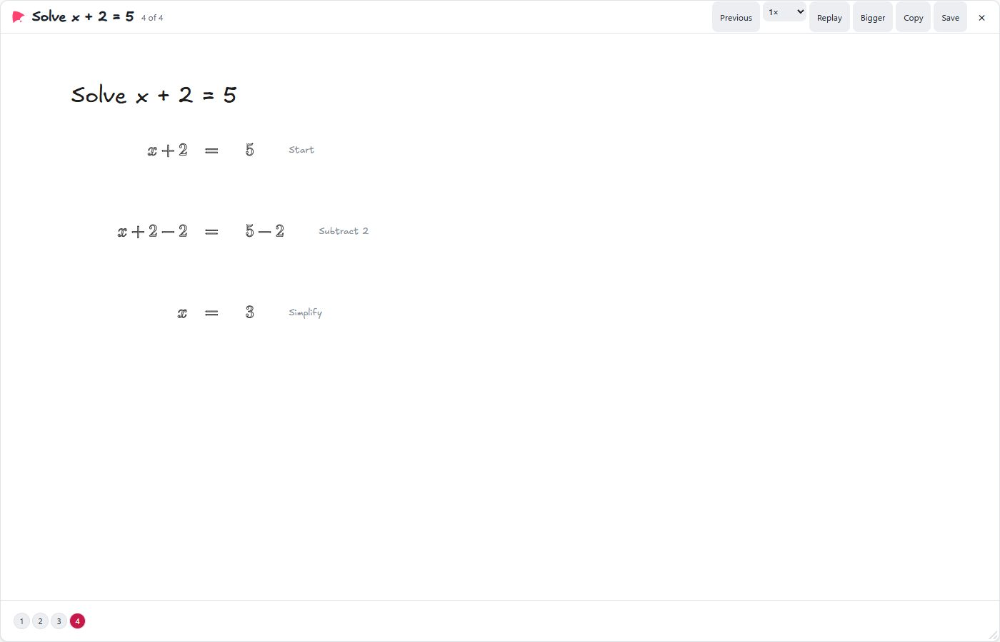 — · 280 tokens · 4 beats · 13 elements · text 14 px Lint-clean | 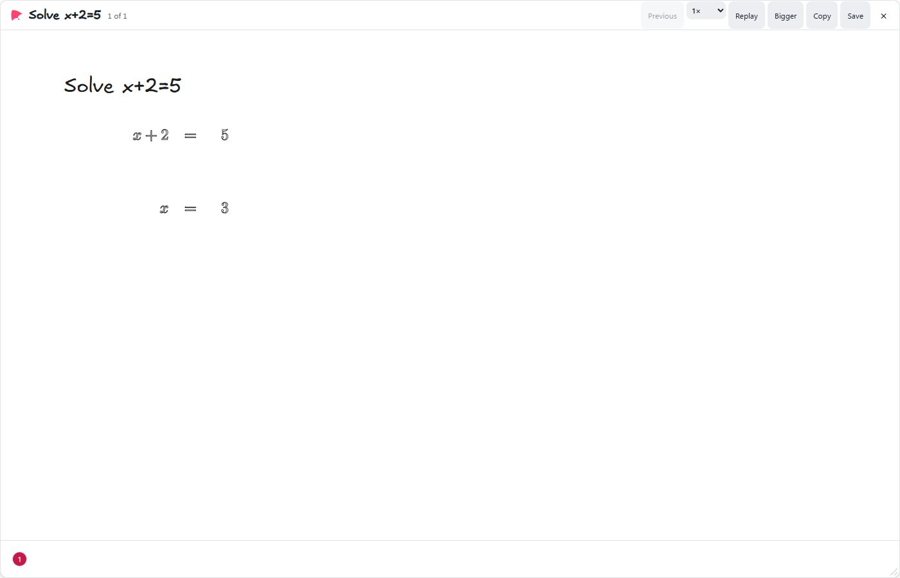 — · 158 tokens · 1 beats · 7 elements · text 19.5 px Lint-clean | 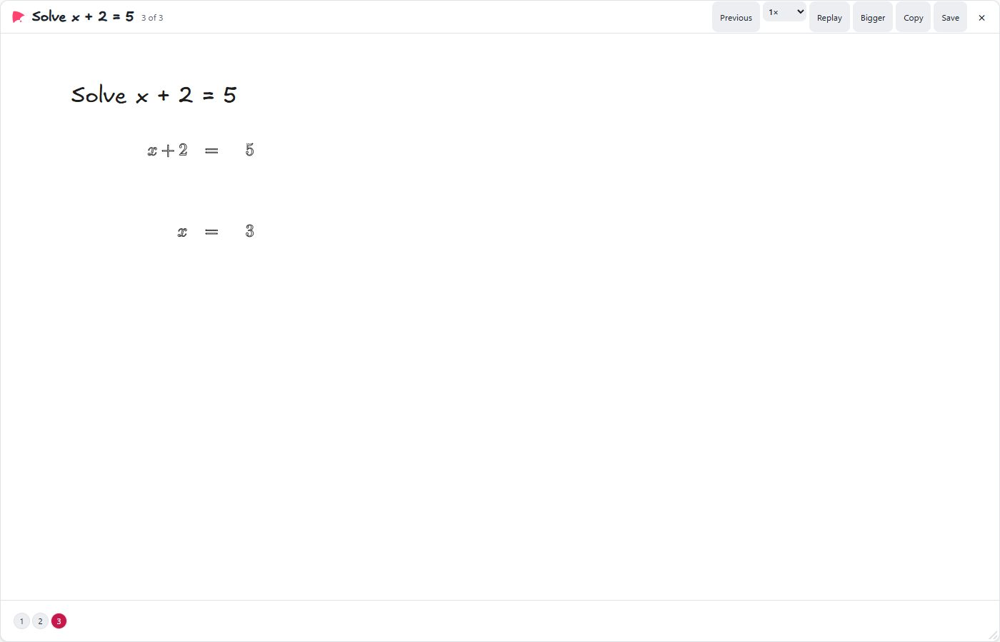 — · 180 tokens · 3 beats · 7 elements · text 19.5 px Lint-clean |
| · plotPlot y = x^2 from x=-3 to 3, mark the minimum at (0,0) and shade the area under the curve. | — | 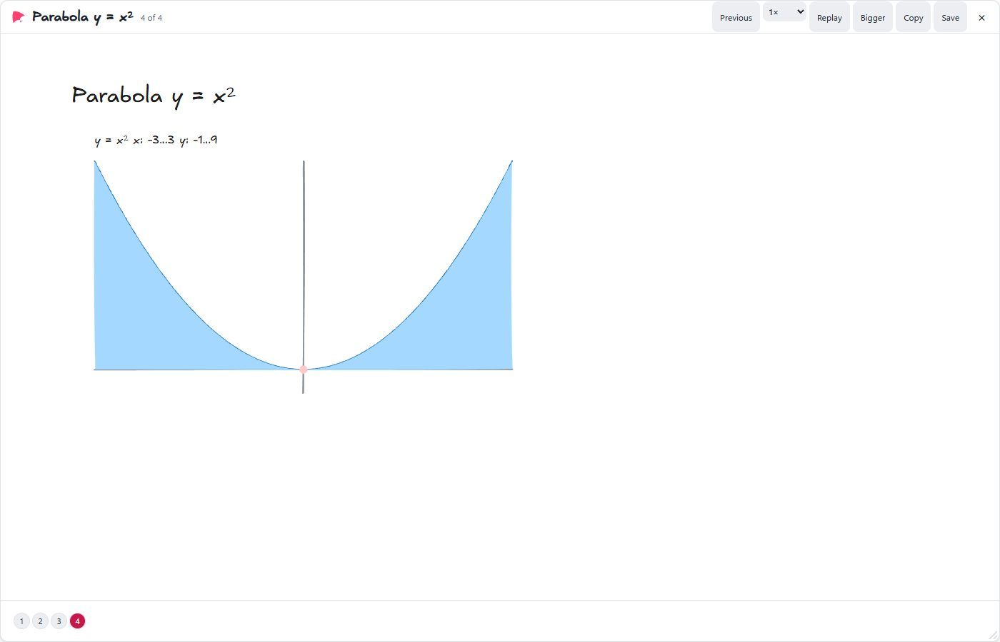 — · 219 tokens · 4 beats · 7 elements · text 16.2 px Lint-clean | 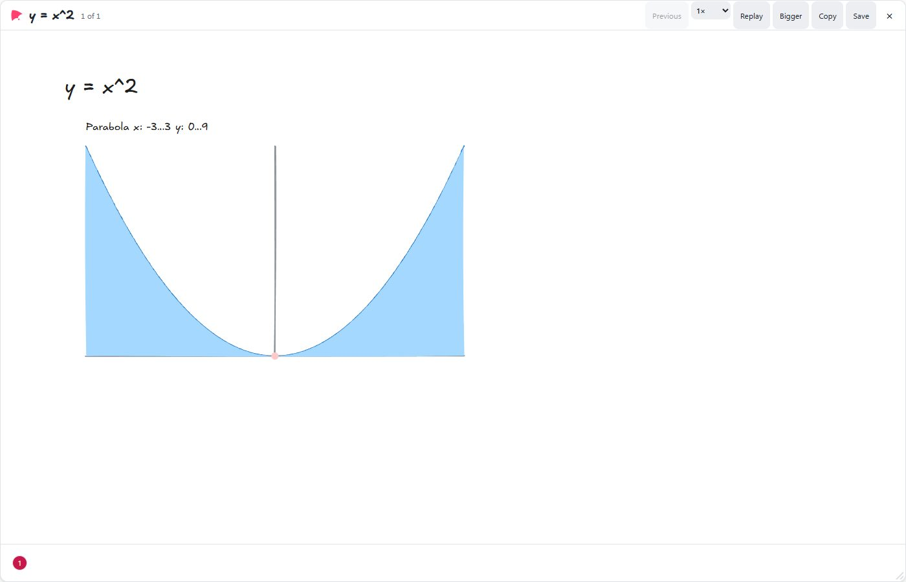 — · 215 tokens · 1 beats · 7 elements · text 16.2 px Lint-clean | 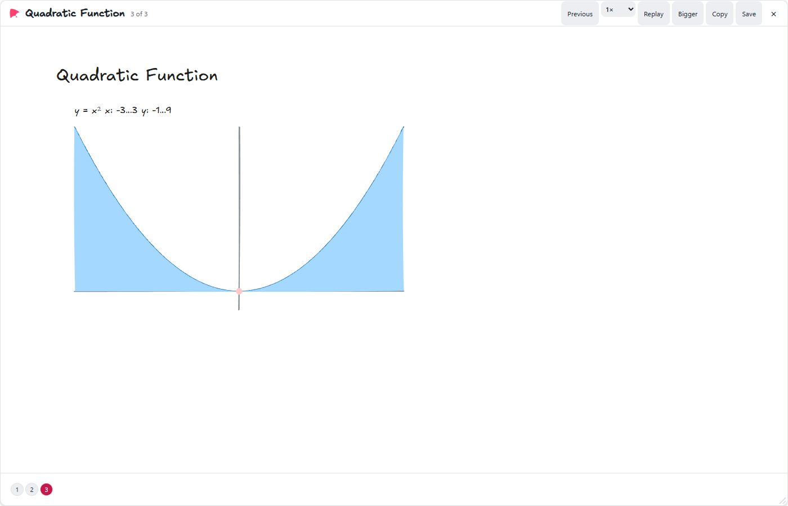 — · 170 tokens · 3 beats · 7 elements · text 16.2 px Lint-clean |